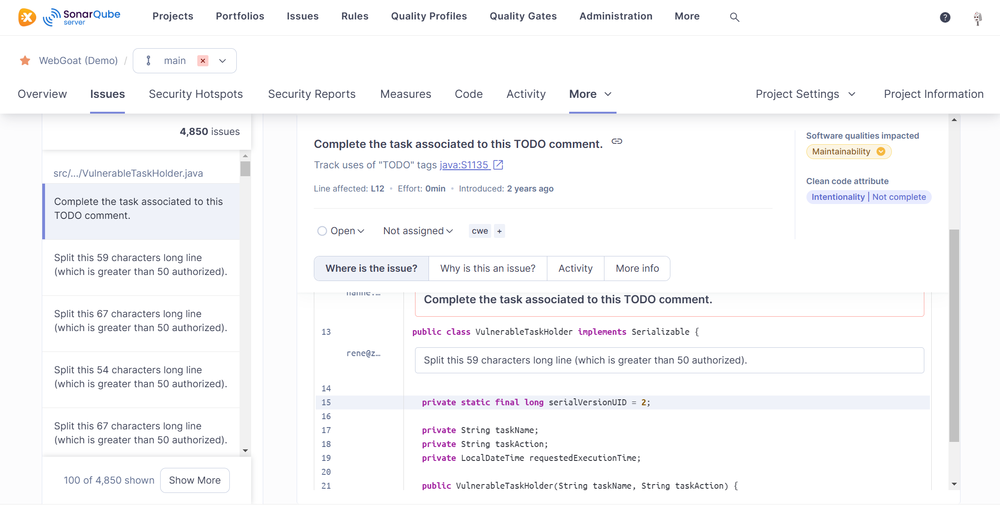

Verifica y asegura tu código en la era de la IA con SonarQube
Reduce riesgos, vulnerabilidades y fallos en producción validando automáticamente tu código con análisis estático, seguridad integrada y capacidades de inteligencia artificial.
Los equipos que validan su código con SonarQube reducen significativamente incidencias en producción y los riesgos asociados al código generado por IA.
Sonar y excentia te ayuda a escribir código de alta calidad rápidamente y sistemáticamente.
